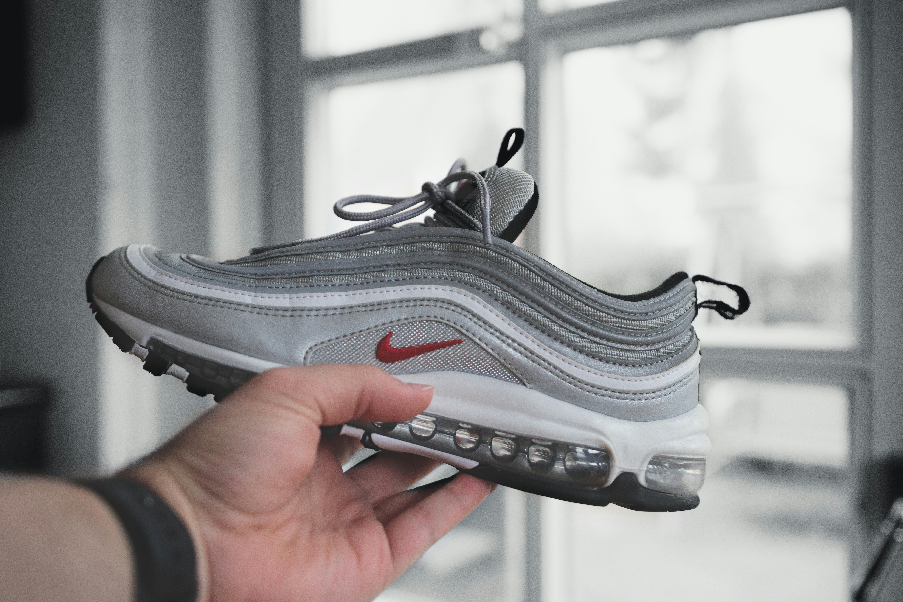

Nike Air Max 97
Silver Bullet

Descripción general
Las Nike Air Max 97 "Silver Bullet" son uno de los modelos más icónicos de la historia de las sneakers, lanzadas
originalmente en 1997 y diseñadas por Christian Tresser. Este colorway es considerado el más emblemático y codiciado
de la línea Air Max 97.
Características principales
- Construcción en capas alternando malla metálica plateada y cuero sintético.
- Materiales sintéticos y mesh para estructura y ventilación.
- Elementos reflectantes 3M Scotchlite en forma de ondas para visibilidad nocturna.
- Sistema de cordones oculto (característica distintiva del modelo).
- Mini Swoosh rojo bordado en la parte inferior.
Regresar